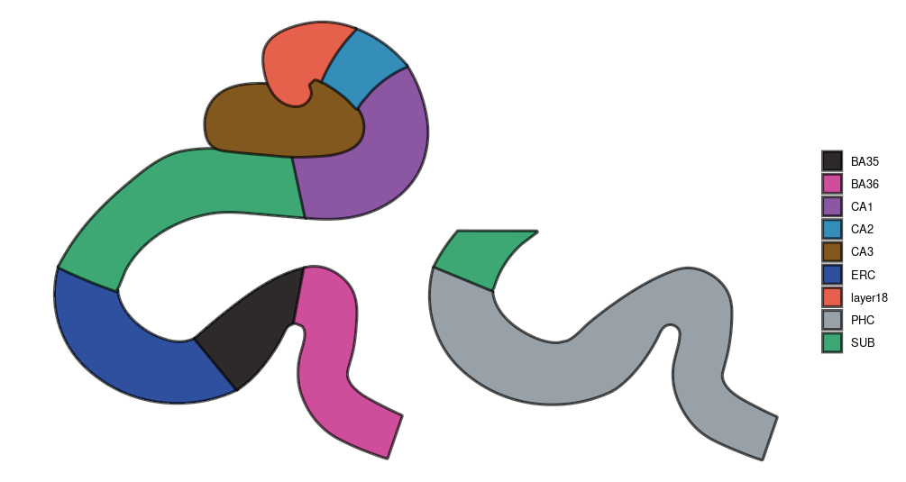

Building SVG atlases
building-svg-atlases.RmdIf you have drawn an atlas in Inkscape, or some other vector-based
illustration software, build_atlas_svg() can turn that
drawing directly into an sf atlas.
How to construct the SVG
The cleanest template stores the anatomical boundaries themselves:
- Create one SVG group or layer for each anatomical region.
- Draw each region as a closed, filled path. Bezier and freehand tools are both fine, provided the final object is an ordinary closed path. The fill is the region; the stroke is only optional styling.
- Give every region a stable, unique name. ggbrat checks
data-name, a meaningful Inkscape layer label, a path<title>, and finally the groupid. - Keep paths as direct children of the region layer. A region may
contain several closed paths if it is disconnected. Repeated layers may
also share a region name;
combine_regions = TRUEcombines them. - Do not convert strokes to paths. That produces a thin compound outline rather than the polygon you meant to draw.
- Convert live path effects and shape objects to ordinary paths before export. Avoid clipping masks, clones, text, embedded raster images, and nested decorative groups inside atlas layers.
- Save as plain or standard SVG. Line, cubic, and quadratic Bezier commands are supported. Convert elliptical arcs to Bezier curves.
Import a correctly authored template
atlas <- build_atlas_svg(
"my_atlas.svg",
geometry_method = "path"
)
ggplot(atlas) +
geom_sf(aes(fill = region), colour = "black", linewidth = 0.5) +
coord_sf(datum = NA) +
theme_void()SVG uses a downward-positive Y axis. The default
flip_y = TRUE converts it to the conventional Cartesian
orientation used by sf and ggplot.
Reconstruct drawings
Some drawings may contain contain converted strokes or sampled
outlines instead of closed region polygons. For those it is still
possible to get it into an sf object, but we have to do some
reconstruction, which is why the package concaveman is
needed.
install.packages("concaveman")
legacy_atlas <- build_atlas_svg(
"legacy_drawing.svg",
geometry_method = "concaveman",
concavity = 0,
length_threshold = 2.5
)concaveman is suggested rather than imported because
this reconstruction is a specific fallback, not part of normal SVG
import. Smaller concavity values retain more boundary
detail; Inf creates a convex hull.
